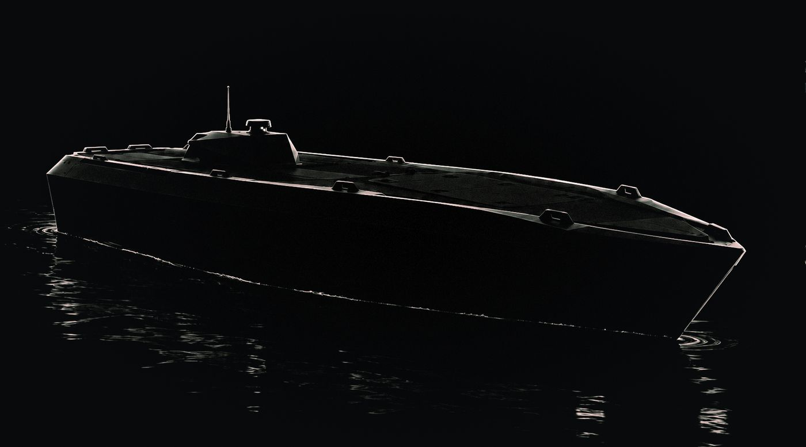
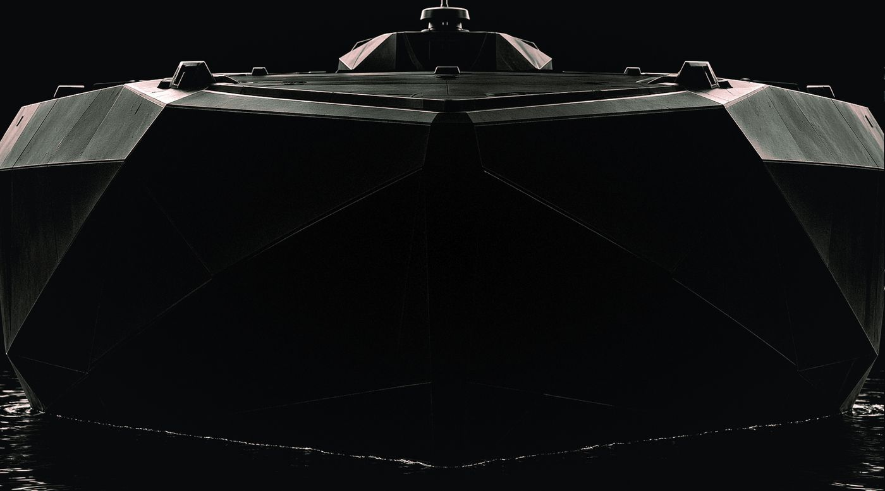
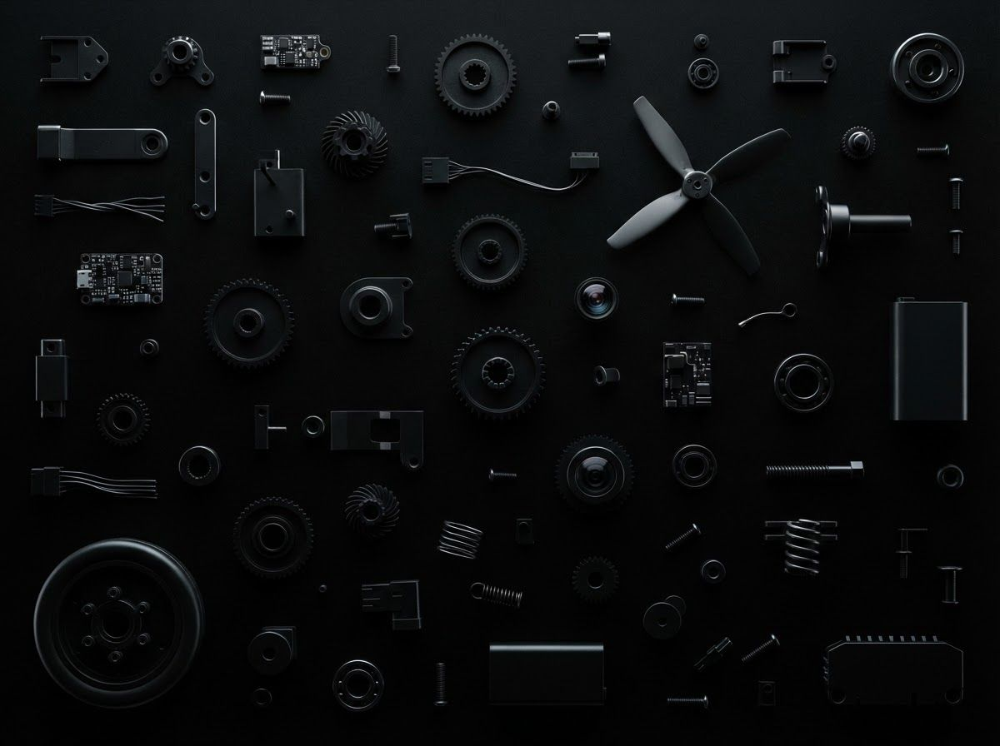
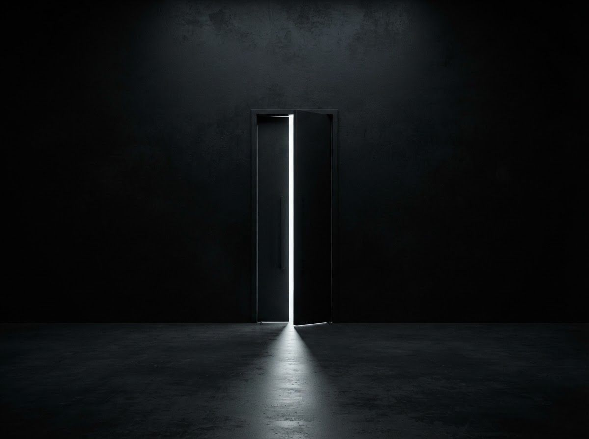
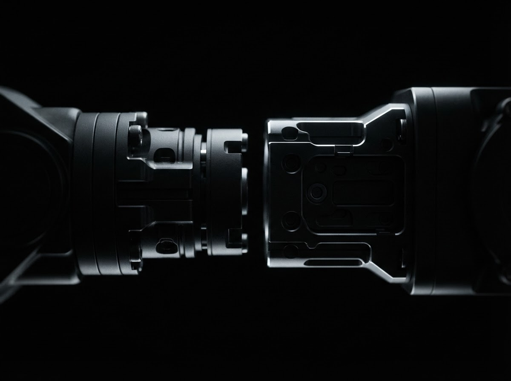
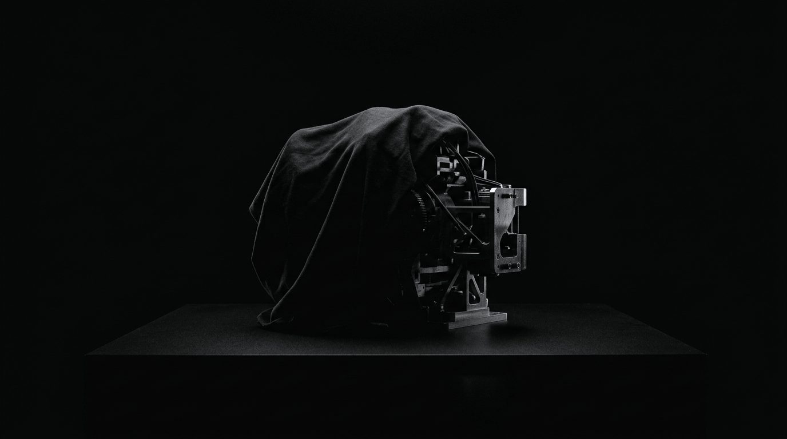
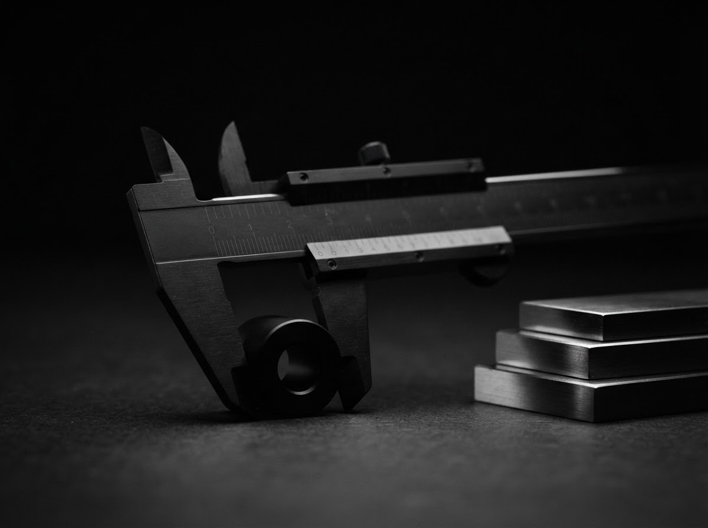
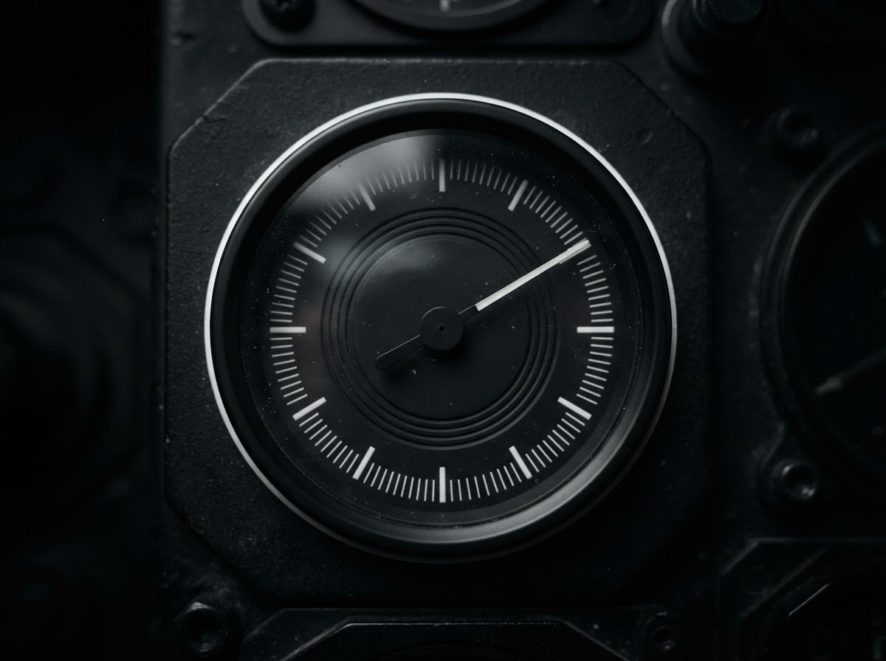

SEAL
Разные задачи. Одна морская платформа
Носитель, навигация, связь и полезная нагрузка должны работать согласованно.
В SEAL их объединяет общая техническая и программная основа: отработанные решения используются повторно, а подход к обслуживанию остается единым.


Оснащение под задачу
Версии одной платформыСтандартные крепления, питание и цифровые интерфейсы связывают платформу с нагрузкой. Версии Counter-UAS, Combat и One-Way развиваются как отдельные направления.
Для кого
Три роли вокруг платформы
Оператор
Положение, состояние и оборудование аппарата на одном экране.

Руководитель флота
Состав флота, конфигурации и задачи доступных аппаратов.

Заказчик специальных версий
Модули создаются под требования на базовых креплениях и интерфейсах.
Возможности
Общая основа для разных версий
Core объединяет навигацию, датчики и диагностику. Новый состав оборудования учитывается в ПО аппарата.

У каждого модуля есть описание, функции, версия, потребление и состояние.
Движение по маршруту, возврат и диагностика входят в план развития. Доступность зависит от версии.

AGATA объединяет положение, состояние, конфигурации и задачи доступных аппаратов.
Запросить презентацию
Расскажите о задаче — подготовим материалы под ваш сценарий. Подробности передаются после соглашения о конфиденциальности.
Ответ в течение двух рабочих дней.